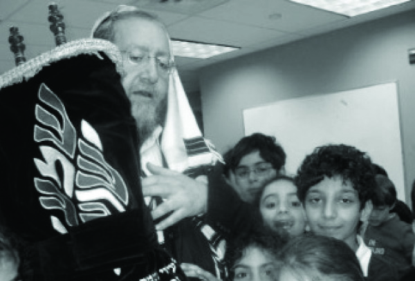

An Unprecedented Medical Miracle
That was a Hallel like none other that I’ve ever experienced. When I said the words, “I will not die for I will live and tell the deeds of G-d” I could not help but look at the walking miracle among us. * The incredible story that recently took place as heard directly from the shliach, Rabbi Yosef Yitzchok Geisinsky of Great Neck.
By Mordechai (Motty) Ziegelboim

Two decades of shlichus in Great Neck, New York nearly ended in tragedy last month, when the shliach, Rabbi Geisinsky suffered a severe heart attack. Anash davened for a refua shleima and the miracle happened. His extraordinary return from the dead, literally, became the talk of the day. Perhaps less well known than his speedy recovery, in direct opposition to the doctors’ predictions, and at a rate that left even the most optimistic among them in shock, is the chilling story of his heavenly visit.
I was there in his shul when R’ Geisinsky told his story which I share here with you, except for some details which R’ Geisinsky preferred not to publicize.
***
Great Neck is a beautiful section of Long Island where R’ Yosef and his wife Chani opened a Chabad house for the many Jews in the area. This is not an easy shlichus. You can’t just knock on doors. Everything has to be arranged ahead of time. It is an affluent area where, without four to five million dollars, you cannot buy even a simple home.
About 6500 families live in Great Neck. Until the 1970’s, Great Neck was populated primarily by wealthy Italians. After the Iranian Revolution at the end of the 70’s, many wealthy Jews fled Iran and bought homes in Great Neck. Presently Great Neck has a large Jewish population, many of whom are Persian, some of whom are Orthodox.
The Geisinskys work hard on their shlichus. They are about to finish building a magnificent Jewish center. Mrs. Geisinsky runs the Silberstein Hebrew Academy with several hundred children. The Chabad house flourishes, despite the bitter battles waged by local Reform groups.
In Great Neck nothing comes easy. Just a few years ago, after twelve years of outreach, the shluchim finally received all the permits needed to build the shul and Jewish center.
THE DOCTORS NEARLY GAVE UP
It was almost the third night of Chanuka of this year. The sun would be setting soon and R’ Geisinsky was on his way to the public menorah lighting. On the way, he did not feel well and he decided to pass by his house to get a drink of water. He arrived home and felt overcome by weakness. He collapsed on the floor, unconscious. His nine year old son found his father unconscious and bloody.
He quickly shouted for his mother who was in another part of the house and immediately called for an ambulance.
Mrs. Geisinsky also called for help. When the paramedics arrived, all it took was one look for them to say, “Heart attack.”
In the ambulance, they tried to revive the shliach, to no avail. There was no pulse, no reaction. The paramedics did all they could but were unsuccessful. R’ Geisinsky had no pulse for over forty minutes! An eternity in the medical world.
The resuscitation efforts continued in the emergency room. Everything was tried as the family members stood around and prayed that they wouldn’t be bereft of their beloved patriarch. The doctors nearly pulled the sheet over his body, but then one of the doctors noticed faint signs of life. From that point on, despair turned to hope. Herculean efforts continued to be made to bring the rabbi back to life.
Among the doctors was a rofei-yedid (doctor-friend) who knew R’ Geisinsky personally. He was the one who insisted that they continue the resuscitation efforts. After the miraculous recovery, the doctor went to visit him and said that usually, after thirty minutes of trying, if there is no pulse, they stop. Thirty minutes without sufficient oxygen to the brain is definitely reason enough to give up. “From a medical standpoint, this is death.” Nevertheless, he insisted that they keep trying, saying that he knew the rabbi personally and would find it so difficult to tell the family the bad news.
As soon as they saw the first signs of a pulse, a number of medical interventions were done. But the doctors told the worried family, “We did what we could; from here-on-in, only prayers will help you. Pray, pray hard. At least 72 hours must pass before we know whether we were successful.”
R’ Geisinsky was attached to many beeping machines. The doctors and the family knew that he was hovering between heaven and earth. They just didn’t know which one he was closer to.
From the third night of Chanuka until the fifth of Teves, the shliach was in a coma. Then he opened his eyes. The family was ecstatic. From that point on, his condition swiftly improved. According to the shliach, the main improvements in his condition took place during the Shabbasos after his hospitalization. He has no way of explaining this.
Only three weeks later, he was released to his home. The doctors consider him an unprecedented medical miracle.
“FOR YOU EXTRICATED MY SOUL FROM DEATH”
I am the baal t’filla at the Chabad house of Great Neck for the Yomim Nora’im for a number of years now [see issue 850]. R’ Geisinsky asked me to come for Shabbos, Rosh Chodesh Shvat, when Hallel was recited, not only in honor of the special day but also to thank G-d for his miracle. I was happy to be there when he first rejoined his community after his illness.
It is hard to describe the tremendous excitement felt in the community upon his return to shul for the first time. That was a Hallel like none other that I’ve ever experienced. When I said the words, “I will not die for I will live and tell the deeds of G-d … Open for me the gates of righteousness and I will enter,” I could not help but look at the walking miracle among us.
After the reading of the Torah in which the shliach was honored with the aliya of Maftir and he recited the HaGomel blessing, he addressed the packed congregation. It wasn’t easy for him, for he was still weak, but this is what he told them:
“After I fell unconscious, I felt myself rising to the supernal worlds, just like I’ve heard has happened to other people in my condition. My father, of blessed memory, and other deceased family members came to greet me.
“At a certain point, I was greeted by one who introduced himself as the Angel Michoel. He took me to the chambers of various tzaddikim. I saw that each tzaddik sat in his own chamber and taught Torah. [R’ Geisinsky asked me to omit some of the details of his story here, which he told, in full, to his congregation].
“I asked the Angel to take me to the chambers of the Baal Shem Tov and the Alter Rebbe. He agreed and I stood facing R’ Yisroel Baal Shem Tov and then the Alter Rebbe.
“The Angel then said to me, ‘We must return to the heavenly court where your trial is taking place. They have not yet made a decision.’ The Angel explained that when they don’t arrive at a clear decision, they leave a little bit of life-force within the body so that outright resurrection of the dead won’t be necessary if they (the heavenly court) decide to allow the person to stay alive.
“We went to the heavenly court where I saw the members of the court discussing my case. One said this and another said that. They turned to me and asked me what I had to say. Should you return down to the world or remain here? Trembling, I responded, ‘I am a Chassid, a Chassid of the Rebbe. Whatever he says, I’ll accept.’
“They said, ‘If so, let the Lubavitcher Rebbe come and state his opinion about the fate of Yosef Yitzchok ben Chaya Luba.’ I stood there, frightened, waiting for my sentence.
“Then I saw the Rebbe appear, in all his glory, with all those present according him the greatest honor. The Rebbe said, ‘I am working so that Moshiach comes and brings the complete Geula. I sent my shluchim all over the world so they will finish the job. I need my Chassidim at their posts. So Yosef Yitzchok ben Chaya Luba needs to return to life in a physical body to complete his work.’
“It was then that I heard the announcement that Yosef Yitzchok ben Chaya Luba – to life. I awoke from my coma. Apparently, everything I saw took place during the 72 hours that I was unconscious.”
“You are a King Who puts to death, and brings to life and causes salvation to sprout forth”
Beis Moshiach (staff). "An Unprecedented Medical Miracle." Beis Moshiach, no. 869 (February 13, 2013).